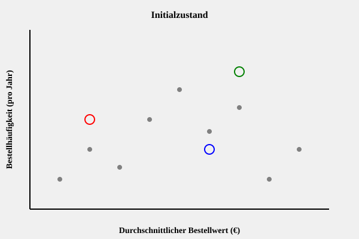
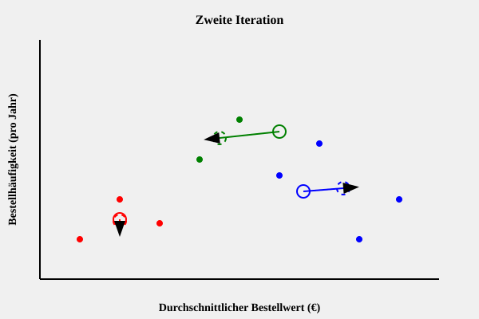
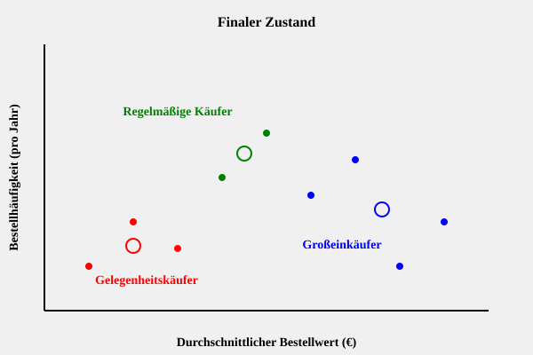
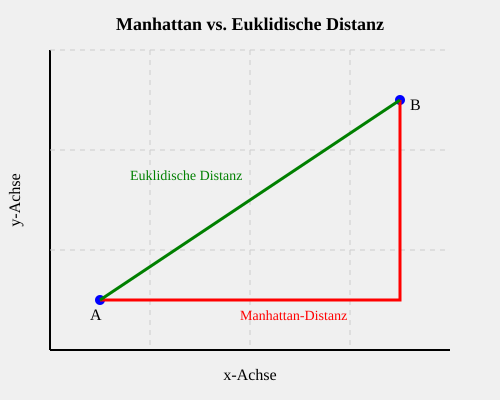

k-Means-Clustering ist ein unüberwachter Lernalgorithmus, der verwendet wird, um Datenpunkte in k Cluster zu gruppieren. Er hilft, Muster in Daten zu erkennen, ohne dass diese vorher gekennzeichnet werden müssen.
Anwendungsbeispiele
Kundensegmentierung: Ein Online-Shop kann Kunden basierend auf ihrem Einkaufsverhalten in Cluster einteilen, um gezielte Marketingstrategien zu entwickeln.
Bildkompression: k-Means reduziert die Anzahl der Farben in einem Bild, indem es ähnliche Farbtöne zu Clustern zusammenfasst.
Anomalieerkennung: k-Means ordnet jeden Punkt einem Cluster zu. Als Anomalien gelten deshalb Punkte, die ungewöhnlich weit von ihrem eigenen Cluster-Zentrum entfernt liegen (oder sehr kleine Cluster bilden), z. B. ungewöhnliche Netzwerkzugriffe oder Betrugsfälle. Verfahren wie DBSCAN können Punkte dagegen ausdrücklich als „keinem Cluster zugehörig“ (Rauschen) markieren.
1. Wie funktioniert k-Means-Clustering?
Wähle k (die Anzahl der Cluster).
Initialisiere die k Cluster-Zentren, z. B. indem k zufällige Datenpunkte als Startzentren gewählt werden.
Weise jedem Datenpunkt das nächstgelegene Cluster-Zentrum zu.
Berechne die neue Position der Cluster-Zentren als Durchschnittsposition (Mittelwert) aller Punkte in jedem Cluster.
Wiederhole die Schritte 3 und 4, bis sich die Cluster-Zentren nicht mehr signifikant ändern (Konvergenz) oder eine maximale Anzahl von Iterationen erreicht ist.
Konvergenz: Der Algorithmus erreicht Konvergenz, wenn die Positionen der Cluster-Zentren zwischen zwei Iterationen kaum oder gar nicht mehr variieren. Dies bedeutet, dass sich die Cluster stabilisiert haben.



Diese vier Diagramme zeigen den k-Means-Clustering-Prozess Schritt für Schritt:
Initialzustand: Alle Datenpunkte sind grau, und die initialen Cluster-Zentren sind zufällig platziert.
Erste Iteration: Die Datenpunkte werden den nächstgelegenen Cluster-Zentren zugeordnet (farblich markiert). Die Cluster-Zentren bewegen sich zum Durchschnitt ihrer zugeordneten Punkte.
Zweite Iteration: Die Cluster-Zentren bewegen sich weiter, und einige Datenpunkte ändern möglicherweise ihre Clusterzugehörigkeit (durch erneute Abstandsberechnung).
Finaler Zustand: Die Cluster-Zentren haben ihre endgültigen Positionen erreicht, und die Datenpunkte sind in ihre finalen Cluster eingeteilt.
Beispiel 1 einfach
Ausgangssituation – Rechenbeispiel (k = 2): Punkte (1|1), (2|1), (4|3), (5|4); Startzentren Z₁ = (1|1) und Z₂ = (5|4).
Zuweisung: (2|1) hat zu Z₁ den Abstand 1, zu Z₂ den Abstand √18 ≈ 4,24 → Z₁. (4|3) hat zu Z₁ den Abstand √13 ≈ 3,61, zu Z₂ den Abstand √2 ≈ 1,41 → Z₂. (Die Startzentren selbst gehören zu ihrem eigenen Cluster.) – warum: Schritt 3 des Algorithmus, jeder Punkt kommt zum nächstgelegenen Zentrum.
Aktualisierung: Z₁ = ((1 + 2)/2 | (1 + 1)/2) = (1,5|1); Z₂ = ((4 + 5)/2 | (3 + 4)/2) = (4,5|3,5). – warum: Schritt 4, das Zentrum rückt in die Mitte seiner Punkte.
Erneute Zuweisung: Alle Punkte bleiben in ihrem Cluster → Konvergenz. – warum: Ändert sich die Zuordnung nicht, ändern sich auch die Mittelwerte nicht mehr.
Güte berechnen: SSE = 0,25 + 0,25 + 0,5 + 0,5 = 1,5. – warum: Mit der SSE lassen sich verschiedene Läufe vergleichen (siehe Hinweis zur Bestimmung von k).
Ergebnis: Cluster {(1|1), (2|1)} mit Zentrum (1,5|1) und {(4|3), (5|4)} mit Zentrum (4,5|3,5).
Beispiel 2 komplex
Ausgangssituation: Eine Schülerfirma will für die Lieferung von Schulmaterial zwei Abholstationen aufstellen, jede möglichst nah an „ihren“ Kundinnen und Kunden. Die Wohnorte (in km auf einem Stadtplan) sind A(1|1), B(2|1), C(1|3), D(5|4), E(6|5), F(6|3). Zufällig gewählte Startzentren: Z₁ = A(1|1) und Z₂ = B(2|1) – zwei Punkte, die nebeneinander liegen. Das ist ein ungünstiger Start (Falle).
1. Iteration, Zuweisung (euklidischer Abstand zu Z₁ | Z₂): A 0 | 1 → Z₁; B 1 | 0 → Z₂; C 2 | 2,24 → Z₁; D 5 | 4,24 → Z₂; E 6,40 | 5,66 → Z₂; F 5,39 | 4,47 → Z₂. Cluster 1 = {A, C}, Cluster 2 = {B, D, E, F}. – warum: Weil Z₂ etwas weiter rechts liegt, „gewinnt“ es alle rechten Punkte und dazu B.
1. Iteration, Aktualisierung: Z₁ = ((1 + 1)/2 | (1 + 3)/2) = (1|2); Z₂ = ((2 + 5 + 6 + 6)/4 | (1 + 4 + 5 + 3)/4) = (4,75|3,25). – warum: Z₂ wird zur Mitte von B, D, E und F gezogen und verlässt damit die linke Gruppe.
2. Iteration, Zuweisung: A 1 | 4,37 → Z₁; B 1,41 | 3,55 → Z₁ (B wechselt!); C 1 | 3,76 → Z₁; D 4,47 | 0,79 → Z₂; E 5,83 | 2,15 → Z₂; F 5,10 | 1,27 → Z₂. Cluster 1 = {A, B, C}, Cluster 2 = {D, E, F}. – warum: Nach dem Verschieben ist Z₁ für B näher; genau dieses Umsortieren macht k-Means aus.
3. Iteration: A 0,75 | 5,55; B 0,94 | 4,74; C 1,37 | 4,77 → Z₁; D 4,35 | 0,67; E 5,74 | 1,05; F 4,85 | 1,05 → Z₂. Die Zuordnung ändert sich nicht → Zentren bleiben gleich → Konvergenz. – warum: Abbruchkriterium aus Schritt 5.
Güte verfolgen: SSE mit den Zentren nach Iteration 1: 21,5; nach Iteration 2: 6. – warum: Die SSE sinkt bei k-Means mit jeder Iteration oder bleibt gleich. Das ist eine gute Kontrolle für Handrechnungen.
Ergebnis: Station 1 bei etwa (1,33|1,67) für A, B, C; Station 2 bei etwa (5,67|4) für D, E, F; SSE = 6.
Kontrolle: SSE von Hand: Cluster 1: (1/9 + 4/9) + (4/9 + 4/9) + (1/9 + 16/9) = 30/9 ≈ 3,33; Cluster 2: (4/9 + 0) + (1/9 + 1) + (1/9 + 1) = 24/9 ≈ 2,67; zusammen 54/9 = 6 ✓. Trotz des ungünstigen Starts wurde hier die naheliegende Einteilung gefunden. Das ist aber nicht garantiert: Deshalb startet man k-Means mehrfach mit verschiedenen Startzentren und behält das Ergebnis mit der kleinsten SSE (vgl. Abschnitt 3).
2. Abstandsmessungen zum Cluster-Zentrum
Ein wichtiger Aspekt des k-Means-Algorithmus ist die Messung des Abstands zwischen Datenpunkten und den Cluster-Zentren. Es gibt verschiedene Methoden, diesen Abstand zu berechnen:
2.1 Euklidischer Abstand
Dies ist die am häufigsten verwendete Abstandsmessung. Sie entspricht der „Luftlinie“ zwischen zwei Punkten.
Formel: d = √((x₂ − x₁)² + (y₂ − y₁)²)
2.2 Manhattan-Abstand
Auch bekannt als „City-Block-Distanz“. Hier wird die Summe der absoluten Differenzen der Koordinaten berechnet – so, als würde man in Manhattan nur entlang der Straßenblöcke laufen.
Formel: d = |x₂ − x₁| + |y₂ − y₁|
2.3 Unterschiede zwischen den Abständen

Abb. 1: Manhattan-Abstand (entlang der Gitterlinien) und euklidischer Abstand (Luftlinie)
Der Manhattan-Abstand ist nie kleiner als der euklidische Abstand. Gleich sind beide nur, wenn die Punkte horizontal oder vertikal nebeneinander liegen (z. B. (0|0) und (3|0): beide Abstände 3).
Bei diagonaler Anordnung (45°) ist der Unterschied am größten: Von (0|0) nach (1|1) beträgt der euklidische Abstand √2 ≈ 1,41, der Manhattan-Abstand 2 – also das √2-Fache. In zwei Dimensionen liegt der Manhattan-Abstand deshalb immer zwischen dem 1- und dem √2-Fachen des euklidischen Abstands.
Der Manhattan-Abstand folgt den Gitterlinien, während der euklidische Abstand die direkte Verbindung darstellt.
Die Wahl der Distanzmetrik kann die Clustering-Ergebnisse beeinflussen, insbesondere bei speziellen Datenstrukturen.
Hinweis: Manhattan-Abstand und k-Medians
Der Mittelwert ist genau der Punkt, der die Summe der quadrierten euklidischen Abstände minimiert – deshalb passen Mittelwert und euklidischer Abstand bei k-Means zusammen. Verwendet man den Manhattan-Abstand, ist der Median der Koordinaten das passende Zentrum. Dieses Verfahren heißt k-Medians. Manhattan-Abstand mit Mittelwert-Zentren zu kombinieren, ist ein Mischverfahren, das funktioniert, aber streng genommen weder k-Means noch k-Medians ist.
Hinweis: Wie bestimmt man eigentlich k?
Es gibt mehrere Möglichkeiten, k zu bestimmen, die meist von der Aufgabe abhängen.
Wenn bestimmte Cluster gebildet werden sollen, lässt sich k meistens schon daraus abschätzen (z. B. bestimmte Nutzergruppen oder bestimmte Artikel).
Wenn keine Anzahl an gewünschten Gruppen bekannt ist, gibt es verschiedene Abschätzungsmethoden wie z. B. die Ellbogenmethode (Elbow-Methode). Dabei berechnet man für mehrere Werte von k die Summe der quadrierten Abstände (SSE). Der Punkt, an dem die Abnahme der SSE deutlich langsamer wird (ähnlich einem „Knick“), wird als geeigneter Wert für k angesehen.
Beispiel:
k = 2: SSE = 150
k = 3: SSE = 75
k = 4: SSE = 40
k = 5: SSE = 38
Hier wäre k = 4 geeignet, da die Abnahme der SSE nach diesem Punkt nur noch minimal ist.
Berechnung der SSE
Die SSE wird wie folgt berechnet:
Berechne für jeden Datenpunkt den Abstand zu seinem zugeordneten Cluster-Zentrum.
Quadriere diesen Abstand.
Summiere die quadrierten Abstände über alle Datenpunkte.
Formel:SSE = Σ d(xᵢ, cᵢ)². Dabei ist xᵢ ein Datenpunkt, cᵢ das ihm zugeordnete Cluster-Zentrum, und die Summe läuft über alle Datenpunkte.
Beispiel: Gegeben sind die Datenpunkte (1|1), (2|2), (3|3) und das Cluster-Zentrum (2|2).
Abstand von (1|1) zu (2|2): √((2 − 1)² + (2 − 1)²) = √2 → Quadrat = 2
Abstand von (2|2) zu (2|2): 0 → Quadrat = 0
Abstand von (3|3) zu (2|2): √((3 − 2)² + (3 − 2)²) = √2 → Quadrat = 2
SSE: 2 + 0 + 2 = 4
3. Vor- und Nachteile von k-Means-Clustering
Vorteile
einfach zu verstehen und umzusetzen
skaliert gut für große Datensätze
Nachteile
Die Anzahl der Cluster (k) muss im Voraus festgelegt werden.
empfindlich gegenüber der initialen Platzierung der Cluster-Zentren (deshalb startet man mehrfach und nimmt das Ergebnis mit der kleinsten SSE)
hat Schwierigkeiten mit nicht kugelförmigen Clustern
sehr anfällig für Ausreißer im Datensatz, weil sie den Mittelwert stark verschieben
Praxisbezug: Segmentierung im Handel und in der Industrie
Alltag: Wenn ein Online-Shop dir andere Angebote zeigt als deinen Eltern, steckt oft eine Kundensegmentierung dahinter.
Beruf:Data Scientists im Marketing nutzen Clustering, um Zielgruppen zu bilden, und in der Produktion, um typische Betriebszustände von Maschinen zu erkennen – ein Messwert weit weg von allen bekannten Zentren kann auf einen beginnenden Defekt hinweisen. Solche Verfahren zur vorausschauenden Wartung werden u. a. in der sächsischen Industrie und an Forschungseinrichtungen wie dem Fraunhofer IWU erforscht.
Das Wichtigste
k-Means – unüberwachtes Verfahren, das Datenpunkte in k Cluster einteilt: Jeder Punkt gehört zu dem Cluster, dessen Zentrum ihm am nächsten liegt, und jedes Zentrum ist der Mittelwert seiner Punkte. Ziel ist eine möglichst kleine Summe der quadrierten Abstände zu den Zentren (SSE). k-Means ist besonders nützlich, wenn du große Datenmengen nach Gemeinsamkeiten und Mustern durchsuchen möchtest.
Die Formeln oben sind der Übersichtlichkeit halber nur für zwei Merkmale (x und y) dargestellt. In der Praxis haben Datenpunkte oft viel mehr Merkmale (z. B. Blütenblattlänge, Blütenblattbreite, Kelchblattlänge und Kelchblattbreite bei Blumendaten – also 4 Merkmale). Die Formeln lassen sich aber einfach erweitern: Für jedes weitere Merkmal kommt ein zusätzlicher Term hinzu. Beim euklidischen Abstand zweier Punkte p = (p₁, …, pₙ) und q = (q₁, …, qₙ) mit n Merkmalen gilt: d = √((p₁ − q₁)² + (p₂ − q₂)² + … + (pₙ − qₙ)²). Python-Bibliotheken berechnen das automatisch für beliebig viele Merkmale. Wie bei k-NN (11.6) müssen die Merkmale dafür vorher skaliert werden.
Lade das folgende Arbeitsblatt herunter und bearbeite Arbeitsauftrag 1 und 2: Arbeitsblatt k-Means (nur im Unterricht). Verwende zur Berechnung der Entfernung den euklidischen Abstand (auf ganze bzw. eine Nachkommastelle gerundet genügt).
Aufgabe 11.7.3: Kundensegmentierung AFB II–III
Ein Online-Shop möchte seine Kunden in Gruppen einteilen, um gezielte Marketingstrategien zu entwickeln. Folgende Daten stehen für jeden Kunden zur Verfügung:
durchschnittlicher Bestellwert
Anzahl der Bestellungen pro Jahr
Zeitspanne seit der letzten Bestellung in Tagen
Wie würdest du den k-Means-Algorithmus auf dieses Szenario anwenden?
Welche Vorverarbeitung der Daten könnte notwendig sein?
Wie würdest du einen geeigneten Wert für k bestimmen?
Welche Herausforderungen könnten bei der Interpretation der Ergebnisse auftreten?